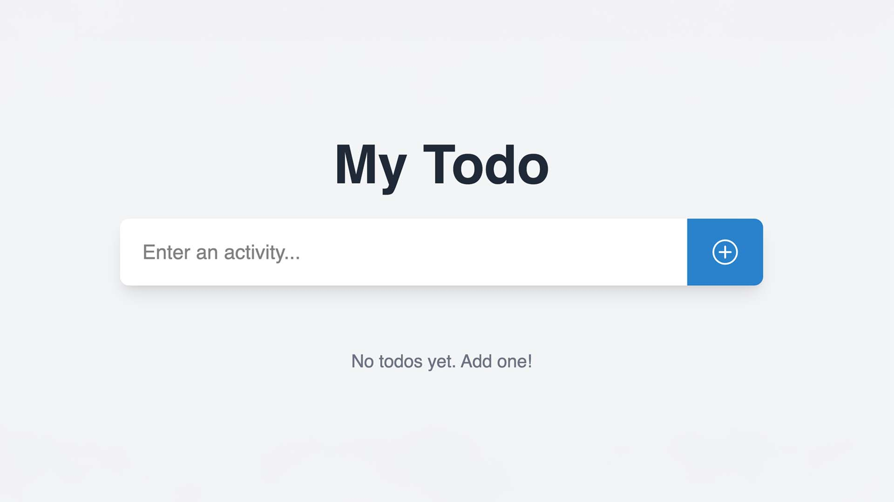

Über Mich
Erfahre mehr von mir
Motiondesigner, Bergliebhaber, 28, Freiheit, Freunde und gutes
Essen – das beschreibt mich sehr gut. In Zukunft vielleicht auch
dein Kollege.
Meine Superkraft liegt darin, dass ich eine hohe intrinsiche
Motivation für die Themen entwickel die mich interessieren.
Jeder Mensch hat die Fähigkeit, viel aus seinem Leben zu machen.
Der Schlüssel zum Erfolg liegt in Hingabe und Kontinuität.
In den vergangenen drei Jahren arbeitete ich als Motiondesigner
und Cutter, sowohl festangestellt als auch freiberuflich.
Ich bin ein Problemlöser und liebe es im Team aber auch allein ,
der sich nun auf die Frontend-Entwicklung konzentriert.
In
den vergangenen 12 Monaten habe ich mir die Grundlagen der
Frontend Entwicklung in verschiedenen Projekten angeeignet. Nun
würde ich gern tiefer in die Materie einsteigen und mein Wissen
weiter ausbauen. Ich liebe es, Probleme zu lösen und den
bestehenden Status quo zu hinterfragen, um Prozesse weiter zu
optimieren.
Wenn du das gefühl hast, dass die Chemie zwischen uns stimmen
könnte, schreib mir gern. 🫶🏻
Projekte
Erfahre mehr über meine Projekte

Do It

Rate Spiel

Mitarbeiterverzeichnis

Dashboard
Lass uns
kennenlernen
Kontakt
„Aufgrund seiner ausgezeichneten Auffassungsgabe ist er jederzeit in der Lage, auch schwierige Situationen sofort zutreffend zu erfassen und schnell exzellente Lösungen zu finden. Auch in Situationen mit größtem Arbeitsaufkommen erweist er sich dauerhaft als außergewöhnlich belastbar.“
Katrin Brandt
SVP Weber Shandwick, ehemalige Chefin